Runs on the keyboard. Connecting reads it; applying edits changes it.
Svalboard-QMK launch edition
The Keybard
user manual.
Connect your board, make your first change, and learn every part of Keybard.
New to KeybardTry it before you connect.Explore an example and learn how editing works.Bringing an existing layoutKeep what you already know.Understand backups, migration and import limits.Returning userPick up where you left off.Reconnect, reopen a draft or reuse a saved layer.

Written against launch Keybard 6d9bd1f. Screenshots use the bundled example and may show fewer behavior slots than current firmware. Connected hardware exposes additional controls. All screenshots can be enlarged.
Start with a keyboard—or an example
Keybard lets you configure your Svalboard, organize layers, create advanced bindings, and set up an on-screen trainer. You can explore the editor before connecting hardware. This guide starts with one ordinary key change, then builds toward reusable layouts and reliable backups.
Choose a starting point on the welcome screen:
| Choose | What happens | Use it for |
|---|---|---|
| Connect Keyboard | The browser asks which keyboard to open, then Keybard reads its configuration. | Editing your connected Svalboard. |
| Load File | A saved layout opens as an offline draft. | Inspecting a backup or continuing exported work. |
| QWERTY Example | A bundled example opens without a keyboard. | Learning the controls safely. |
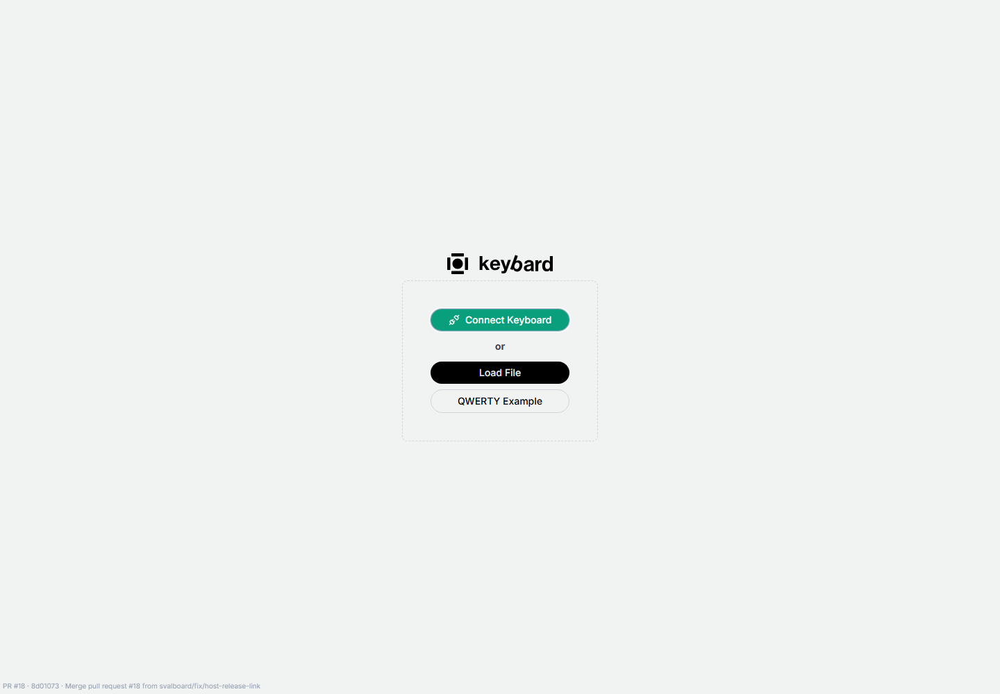
Three places your work can live
May include unsaved changes. The layout you see is not always what the board runs.
A copy you keep. Export downloads it; import reviews which parts can be applied.
Take the five-minute tour
- Choose QWERTY Example.
- If only icons are showing, click the logo at the top of the left navigation rail to reveal its labels. Hovering an icon also identifies it.
- Open Standard Keys, select a key position in the layout, and choose a replacement from the key palette.
- Switch layer tabs to see how the same physical positions can carry different bindings.
- Choose Export Layout in the editor toolbar if you want to keep your experiment.
Offline means no keyboard writes. An example or loaded file is a draft in the current session. Export it before closing or refreshing. Connecting a keyboard later reads that keyboard; it does not automatically install your draft.
Most illustrations use the bundled offline example. Captions explicitly identify connected controls shown with controlled test-board data. No screenshot is presented as proof of a hardware write.
Connect and protect your starting point
Welcome → Connect Keyboard → browser device chooser
Use a desktop browser that supports WebHID, such as Chrome or Edge, and a USB data connection. The connection button is unavailable when the browser lacks the required API. Keybard's browser editor expects compatible Svalboard firmware; seeing a keyboard in a device chooser does not establish firmware compatibility.
- Connect your Svalboard by USB, open Keybard, and choose Connect Keyboard.
- Select the intended keyboard in the browser's chooser and grant access. With several keyboards attached, check which one you selected.
- Wait for the layout to load. Hover the connection/update controls to check the editing target before changing anything.
- Choose Export Layout. Keep the native .svil (Recommended) and Include Macros enabled, then choose Export.
- Name the downloaded file clearly—for example,
before-first-edit.svil—and keep it somewhere you can find again.
Back up before editing. Export captures the configuration currently shown in the editor, including staged changes. Exporting after experiments does not recover the untouched configuration you originally connected to.
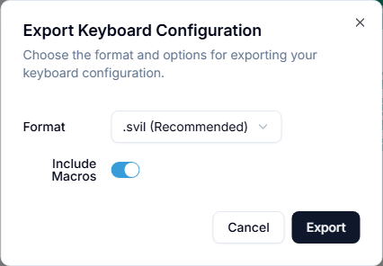
Coming from an older configuration tool
Keep your existing layout backup before changing firmware. You can open a legacy .vil file offline to inspect it, but Keybard blocks direct import of old-protocol layouts into connected Sval firmware when keycode migration is required. Renaming the file extension is not a conversion.
For Svalboard Vial-QMK v2025-11-01 with the vial keymap, the firmware can migrate supported configuration on first boot. Follow the firmware upgrade instructions, connect in Keybard, and verify layers, macros, modifier options, timing and pointing settings. Then export a fresh native .svil. Other old or custom builds are not covered; keep the old file as a reference and recreate anything not migrated. A supported firmware migration is different from importing a legacy file in the browser.
Understand the editing target
| State | Meaning |
|---|---|
| Editing keyboard | Changes can be written to the connected device. |
| Offline draft | Changes affect the loaded file or example in this session. Export to keep them. |
| Pending changes | The editor has changes waiting to be written; the displayed layout may differ from the board. |
| Not saved | A write failed. Some writes may already have succeeded; follow the retry guidance. |
Make and verify your first change
Start with one easy-to-recognize binding on a known layer. Keep the keys you need for navigation and switching layers intact until you are comfortable restoring changes.
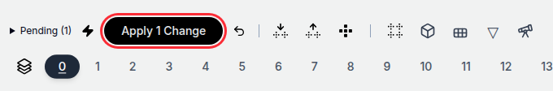
Choose when changes reach the board
Live Updating is on by default. While connected, ordinary queued edits are saved as you make them. For a controlled first experiment, use the lightning control labeled Switch to Manual Updates. You can then review pending edits before applying them.
| Control | Effect |
|---|---|
| Live Updating | Edits are saved as you make them; watch for saving or error messages. |
| Apply N Changes | Writes the pending changes in Manual mode. |
| Discard pending edits | Discards the current unsaved edits. It does not reverse changes already applied. |
| Switch to Live Updating | Applies pending changes before enabling Live Updating. |
- Select the layer you intend to edit.
- Open Standard Keys and select a position on the displayed keyboard.
- Choose its replacement from the palette. You can also drag a palette key onto the target.
- Check the resulting legend. In connected Manual mode, open Pending (N) to review what will be written.
- Choose Apply N Changes and wait for saving to finish. Do not assume a changed legend alone means the board was updated.
- Deselect the key, switch to a text editor, activate the appropriate layer, and test the result.
- Export the verified configuration as a new file.
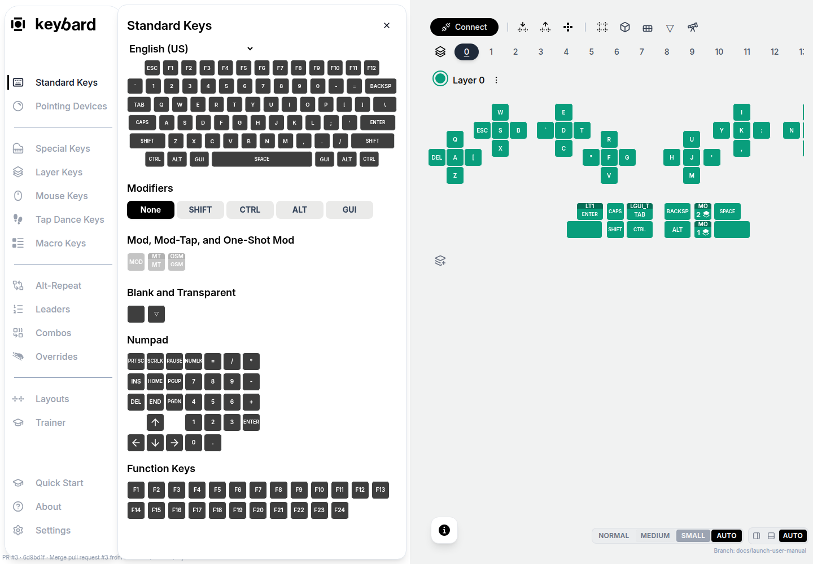
Typing can assign a key. Typing Binds a Key is enabled by default. With an editing target selected, pressing a physical key can assign that key, including modifiers, to the target. Deselect before testing normal typing, or turn this option off in Settings → General.
Dragging an existing layout key onto another position swaps bindings, including across layers. Use this deliberately: it is different from copying a palette key. If an Undo button appears, its tooltip identifies the operation it can reverse; do not treat it as unlimited editing history.
Build a layout you can navigate
A layer is another set of bindings for the same physical key positions. Editing a layer tab changes what you are looking at in Keybard; using a layer binding on the physical keyboard changes what the keyboard types.
| Term | Meaning |
|---|---|
| Base/default layer | The starting layer used when no higher active layer provides a binding. |
| Transparent key | Looks through to a lower active layer for its binding. |
| Blank key | Produces no action at that position instead of falling through. |
| Momentary layer key | Activates another layer while held. |
| Layer-tap key | Types one action when tapped and activates a layer when held. |
Open Layer Keys for layer bindings. Start with a momentary key leading to a small navigation or symbols layer. Keep the activation key usable while that layer is active; a transparent binding at the corresponding position is often appropriate.
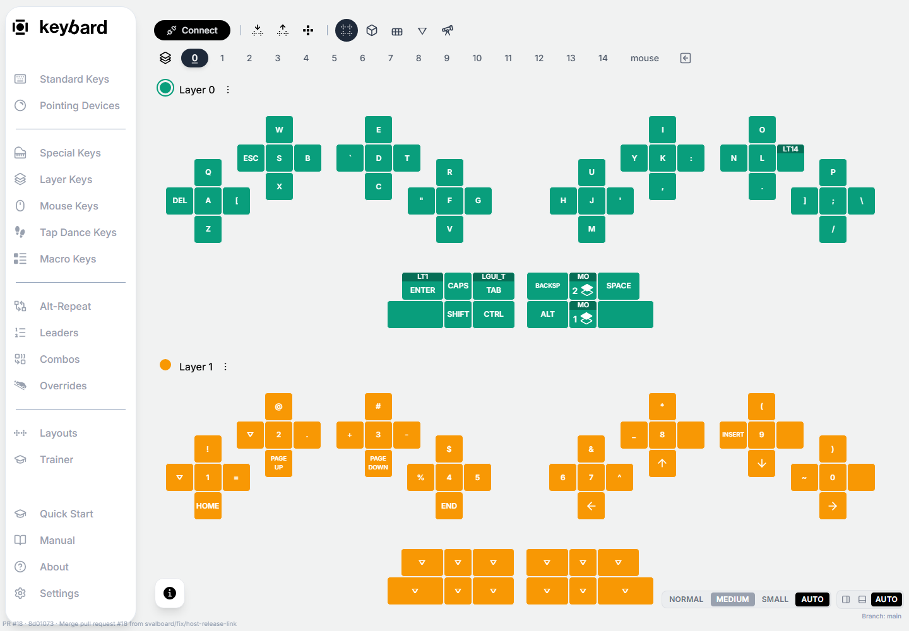
Build a simple navigation layer
- Choose an unused layer, such as layer 1, and assign a small group of arrow keys from Standard Keys. Make the other positions transparent if they should inherit the base.
- Return to the base layer and select a spare position for entering navigation.
- Open Layer Keys, choose Momentary (MO), and assign the tile for layer 1 to that position.
- Review and apply the edits, then deselect the target. In a text editor, hold the new key and try the arrows. Release it and confirm normal typing returns.
For a tap action on the same key, assign its desired tap key first, keep that position selected, then choose Layer Tap (LT) and its destination. The composer derives the tap action from the selected position.
| Layer Keys choice | When to use it |
|---|---|
| Momentary · MO | Activate a layer only while held. |
| Layer Tap · LT | Send a key on tap; activate a layer on hold. |
| Toggle Layer · TG | Turn a layer on or off with a tap. Keep a way to toggle it off. |
| Tap Toggle · TT | Hold momentarily, or tap the configured number of times to toggle. |
| One Shot Layer · OSL | Activate a layer for the next key. |
| To Layer · TO | Replace other active layers while retaining the default. Plan a return binding. |
| Default Layer · DF | Change the base for this power session. |
| Persistent Default Layer · PDF | Save the chosen base across power cycles. |
Name, inspect, and reuse layers
Click a layer name to rename it. Use its color control to make related layers easier to recognize. The layer's actions menu offers Copy Layer, Paste Layer, Make All Blank, Make All Transparent, and conversions between blank and transparent keys. Whole-layer operations affect many positions; check the target layer first.
Show Multiple Layers helps compare layers. 3D View changes their presentation. Hide All Transparent Keys helps inspect inherited bindings; it does not rewrite those transparent keys. Show All Layers reveals layers hidden by the transparent-layer filter.
- Open a layer's actions menu and choose Save Layer... to put a reusable copy in the local Layouts library.
- Open Layouts and expand a saved or imported layout.
- Drag the desired layer onto the destination layer in the editor.
- Read the replacement confirmation and confirm only when the destination is correct.
- Review and apply the resulting changes according to your update mode.
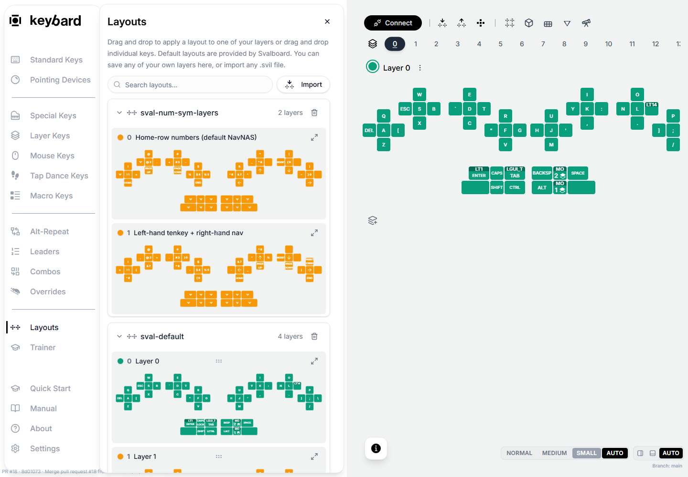
Local library, not a backup service. Saved layers and imported library items belong to this browser's local storage. Export important configurations to files; clearing browser data can remove local library content.
Try it: transparent is different from blank
A schematic of three positions, not a live keyboard. The base is A · B · C. Layer 1 is 1 · Transparent · Blank.
ABase layer
BBase layer
CBase layer
With only the base active, these three positions send A, B and C. Activate Layer 1 to see what changes.
Give a key more than one job
Special Keys groups additional actions such as media and system controls; Layer Keys and Mouse Keys have their own palettes. Use the same select-and-assign or drag-and-drop interaction as Standard Keys.
A normal assignment sends a key. A behavior can send a sequence, distinguish a tap from a hold, or recognize several keys together. Start with one small example, verify it in an empty document, and then build on it. The maintained Svalboard firmware provides 256 slots each for macros, tap dances, combos, overrides, alternate-repeat mappings, and leader sequences. Available entries depend on the firmware or file you have loaded.
Editing and using are different steps. A macro or tap dance needs both a definition and a key that invokes it. Combos and overrides respond to their configured triggers. Leaders need a Leader key as well as a sequence. In Manual Updates, apply the queue with Apply N Changes before testing on the board. In Live Updating, supported edits reach the board as you make them. Close the binding editor, deselect the assignment target, and focus a disposable text document before testing: typing while an assignment target is selected may change the layout.
Macros: send a short sequence
Macro Keys → edit a slot
A macro runs its actions in order. Begin with something harmless, such as the text “hello”. You can author a macro in an offline layout; executing it requires assigning it on a connected board.
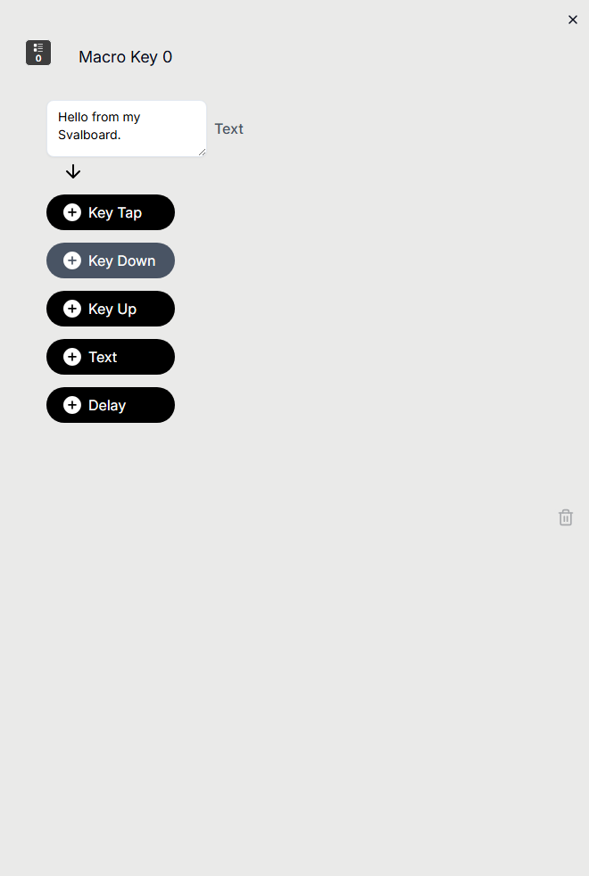
- Open Macro Keys and edit an unused numbered entry. In the compact bottom-panel presentation, the plus control opens an empty entry.
- Add Text and enter
hello. Give the macro a useful name by clicking its title where renaming is available. - Close the editor. Select a spare position in your layout, then choose that macro’s numbered key tile, or drag its tile onto the position.
- Apply queued changes if necessary. Deselect the assignment and focus an empty document. Press the physical key once; it should type your text.
- Return to the editor to add actions only after the small example works. Export a fresh backup when you are happy with it.
Key Tap presses and releases a key. Key Down holds it, and Key Up releases it. Delay inserts a pause in milliseconds. For a chord, use a modifier down, a key tap, and a matching modifier up. Always balance held keys with releases. Macro storage is shared across entries, rather than a separate fixed allowance for each macro.
Text macros send keyboard input, not clipboard contents. The operating system’s keyboard layout affects the resulting characters; do not assume arbitrary Unicode text will work. Start with simple text and test punctuation in your actual OS layout. Avoid using passwords or other secrets as examples: a macro and an exported configuration are not a secure secret store.
Tap dances: tap, hold, or tap twice
Tap Dance Keys → edit a slot
A tap dance gives one physical position several outputs. A simple learning example is Tap: A and Double-Tap: B, with unused actions left empty. This makes the difference easy to see in a scratch document.
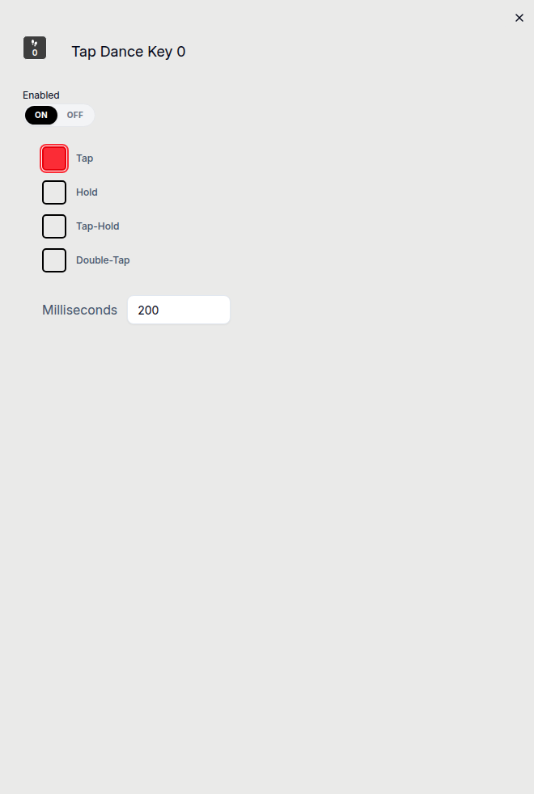
- Open an unused entry in Tap Dance Keys.
- Select the Tap slot and assign A. Select Double-Tap and assign B. Hold is a sustained press; Tap-Hold is a tap followed by a held press.
- Review the timing field and leave Enabled on. Avoid changing timing and every action at once.
- Close the editor and assign the entry’s tap-dance tile to a spare keyboard position. Apply queued changes.
- Deselect and test a single tap, then a quick double tap in an empty document. Adjust the timing if your deliberate double taps are being separated.
Release before editing. Release a held tap-dance key before changing its action. The launch firmware has a known edge case where editing a held dance can leave its previous output held.
Combos: press a small chord
Combos → edit a slot
A combo recognizes up to four input keycodes pressed within its timing window, and emits an Output. For example, A and B together can send Escape. These are keycode triggers, not a named pair of physical positions: consider where those assignments appear in your layers.
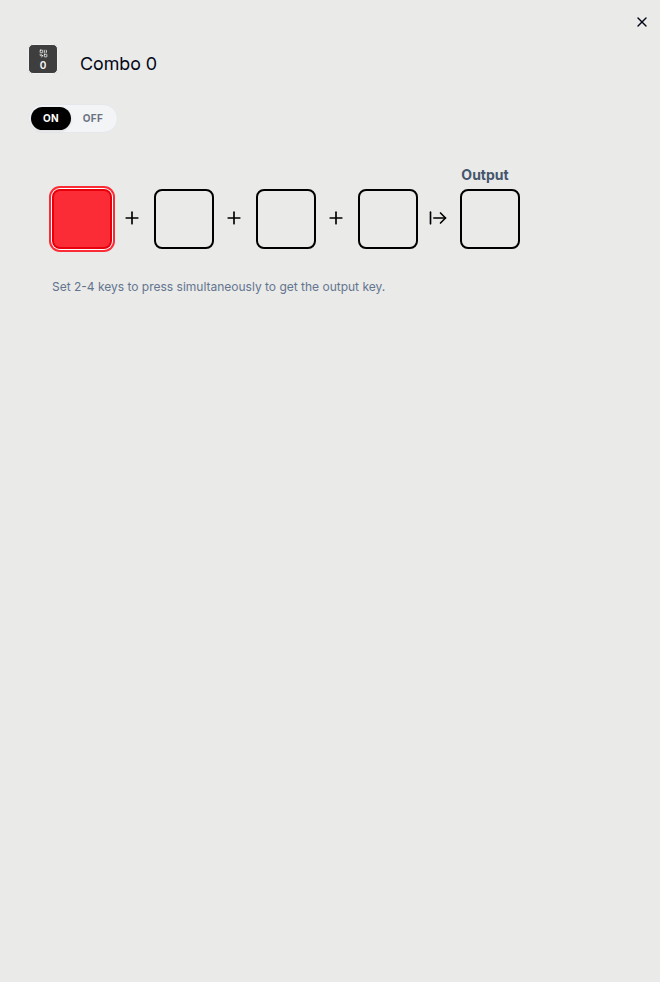
- Choose an unused combo. Fill the first two input slots with A and B and choose Escape for Output.
- Leave the remaining input slots empty and enable the entry.
- Apply changes. Deselect, focus a safe test window, and try each key separately before pressing them together.
- If the chord is difficult to catch, review Combo Timeout in the Combos panel while connected. Increase it cautiously: a generous window may catch ordinary typing rolls.
Choose combinations that are comfortable but uncommon in your normal text. After verifying the mechanics, replace the demonstration with your preferred inputs. There is no separate assignment step beyond having those input keycodes available on the keyboard.
Modifiers, mod-taps, and one-shots
Standard Keys → Modifiers → Mod, Mod-Tap, and One-Shot Mod
A modifier chord, a held modifier, and a mod-tap are different tools. A chord such as Ctrl+C sends a shortcut. A mod-tap can send A when tapped and hold Control when held. A one-shot modifier lets you tap Shift, release it, and then type a shifted key without holding both keys together.
- For the A/Control example, first assign A to the target position and keep that position selected.
- In Standard Keys, select Control under Modifiers. The constructed keys use the currently selected position’s base assignment.
- Choose the generated Mod-Tap tile. Do not choose the standalone modifier or one-shot tile by mistake.
- Apply changes, deselect, and test a tap in a scratch document. Then hold the key while pressing another key to verify the modifier behavior.
For a one-shot Shift, choose Shift and the generated one-shot tile instead. Test by tapping that key, releasing it, and typing a letter. Modifier controls include left/right choices; other composer presentations offer MEH (Control, Shift, Alt) and HYPER (those plus GUI). GUI is the Windows/Command-style modifier interpreted by your OS.
Use QMK Settings → One Shot Keys to review timeout and repeated-tap locking. Mod-tap decisions also depend on the Tap-Hold settings described below. Test typing rolls as well as isolated presses; a configuration that works slowly can feel different at speed.
Overrides: change an action under a modifier
Overrides → edit a slot
An override replaces a trigger when its modifier and layer conditions match. A useful example is Shift+Backspace producing Delete. It changes how an existing assignment behaves, so you do not place an “override key” in your layout.
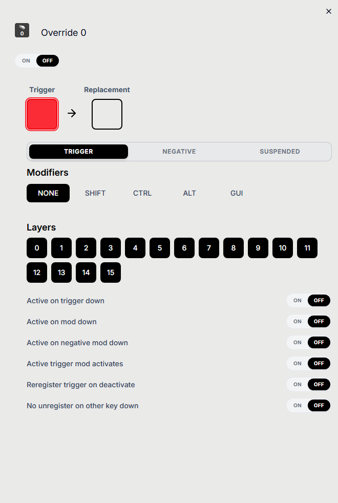
- Set Trigger to Backspace and Replacement to Delete.
- In the Trigger modifier tab, select the Shift modifier you use. Review handedness if you use both Shift keys.
- Use Suspended for the triggering modifier you do not want included with the replacement. Negative specifies modifiers that prevent the override; leave it empty for this basic example.
- Select the intended Layers, enable the entry, and keep advanced activation options at their existing defaults unless you have a reason to change them.
- Apply, deselect, and test against expendable text: Backspace should retain its normal action, while the configured Shift combination should perform Delete.
Leaders: type an ordered sequence
Leaders → Leader key and sequence entries
A leader sequence is ordered input after a dedicated Leader key. Unlike a combo, its keys are typed in succession. For a harmless first example, Leader, A, B can trigger a macro that types “hello”.
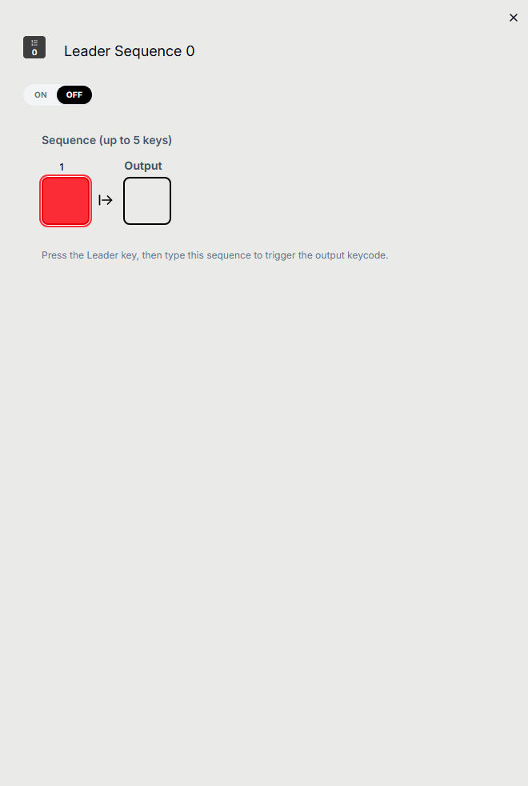
- Create and test the simple text macro first.
- Open Leaders. Assign its Leader tile to a spare position.
- Edit an unused sequence. Set its first two keys to A and B, and its Output to your macro. Enable it. Sequences allow up to five keys.
- While connected, review Leader Timeout. Per-key timing resets that timeout after each key; otherwise the sequence shares its time allowance.
- Apply, deselect, focus a scratch document, and press Leader followed by A then B within the allowance.
Alternate repeat: associate two actions
Alt-Repeat → edit a mapping
Alternate repeat uses the remembered key to choose an alternate action. For exploration, map A to B and assign the alternate-repeat action to a spare position. After typing A, invoke alternate repeat and inspect the result in a scratch document.
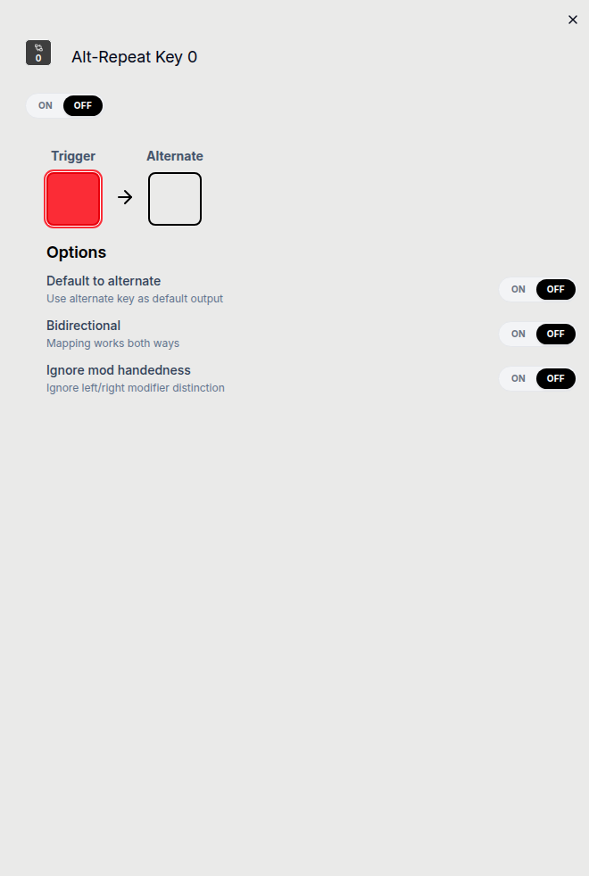
- Choose an unused entry, set Trigger to A and Alternate to B, and enable it.
- Assign the alternate-repeat action from the panel to a physical position. Apply the changes and deselect.
- Test the simple mapping before exploring Bidirectional, Ignore mod handedness, or Default to alternate.
The launch firmware has known defects involving modifier matching and default-alternate behavior. Treat custom mappings as something to verify, especially with modifiers; do not depend on an untested mapping for a critical shortcut.
Set up your pointing devices
Pointing Devices
Connect the board to see its sensor-specific controls. A loaded file can supply assignable pointing keys through the picker, but offline previews cannot demonstrate sensor behavior. The controls and ranges depend on the installed pointer, so your panel may differ from the example.
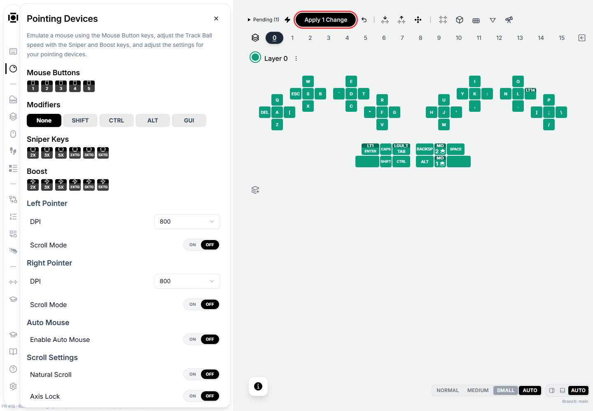
- Start with ordinary pointer movement. Adjust the left or right sensitivity in small steps, applying queued edits as needed.
- Test scrolling and its direction. Review per-side scrolling controls, axis lock, and natural scrolling where available.
- Assign a Sniper hold key to try slower, precise movement. Boost does the opposite. The 2×, 3×, and 5× versions choose the factor; toggle versions stay active without holding the key.
- If you use automouse, confirm its target layer contains useful mouse bindings and a comfortable way back to ordinary typing. Check which pointer may activate it, then tune threshold, decay, and timeout one at a time.
- Verify normal movement, scrolling, and layer return before exporting a backup.
Mouse Keys are keyboard-generated mouse movement and button actions; they are not the same as physical sensor sensitivity. TrackPoint recalibration applies to TrackPoint hardware. Avoid copying a sensitivity number between different sensor types and expecting identical movement.
Known firmware edge cases include buffered scrolling, combinations of speed factors, and disabling an active automouse layer. Keep the first configuration simple and verify the behavior you actually use.
Settings, timing, and board identity
Settings → General → QMK Settings…
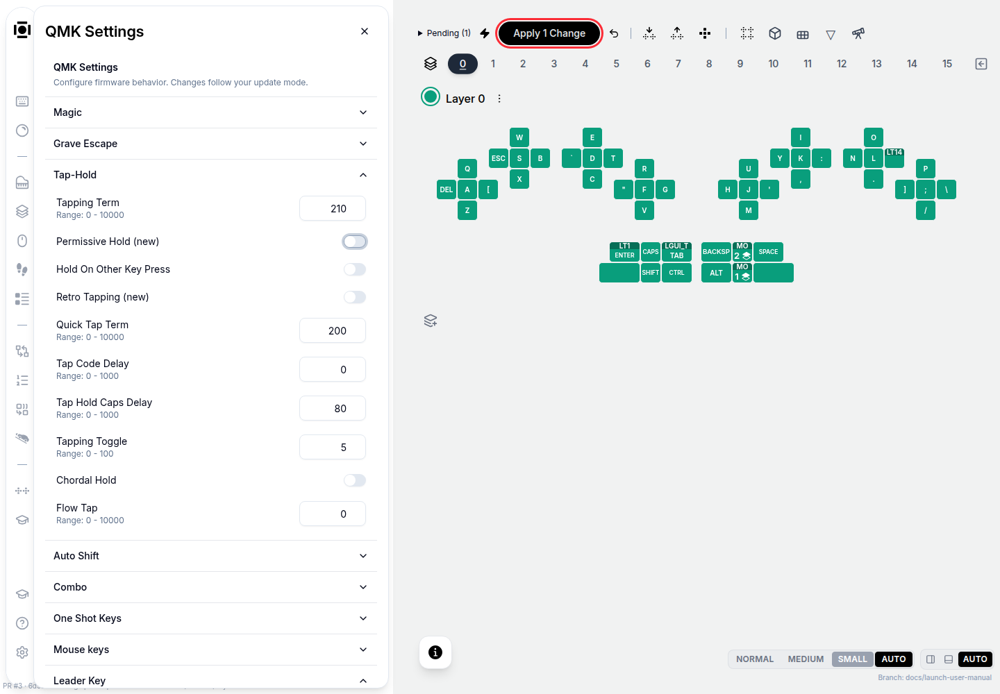
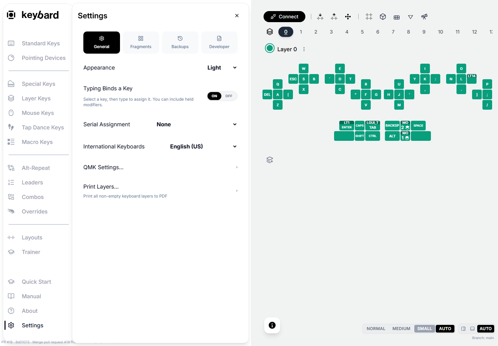
Browser choices include appearance, assignment behavior, and international palette selection. Choose a palette matching your OS keyboard layout; this does not change the OS layout itself. Settings → Fragments selects the finger and thumb assemblies used to draw your board. It describes the installed arrangement rather than rewiring it.
For timing, export a baseline first. Change one control, apply it, and test both slow deliberate presses and normal typing. Tapping Term influences tap-versus-hold decisions. Quick Tap Term affects repeated dual-role tapping. Permissive Hold (new), Hold On Other Key Press, and Retro Tapping (new) control how other presses and releases affect that decision. Chordal Hold uses the hand relationship between keys; Flow Tap can favor taps during rapid typing and is off at zero.
Tap Code Delay controls generated tap duration, Tap Hold Caps Delay handles generated Caps Lock taps, and Tapping Toggle controls TT’s tap count. Their launch defaults are 0 ms, 80 ms, and five taps; a stored toggle count of zero behaves as one. Grave Escape provides separate “Always send Escape” options for Alt, Control, GUI, and Shift.
A visible setting is not a guarantee that a firmware feature is enabled. Standard launch builds do not include Auto Shift, and some mouse-key settings have no runtime consumer. Use the launch notes for those limits rather than repeatedly adjusting an ineffective field.
Where supported, Board name changes how the keyboard appears to your computer. Save now writes immediately, even in manual mode; restart the keyboard for the USB name to change. Apply or export outstanding edits before restarting. Board identity is separate from a layout backup.
Settings → Developer → Scan Lab… is for advanced scanning, power, and firmware diagnostics. Its timing application and bootloader controls can affect hardware immediately. For a simple “does this switch register?” check, use Matrix Tester instead. Power estimates are not battery-life measurements, and longer idle intervals can delay the first response after inactivity.
Check every physical switch
Editor toolbar → Matrix Tester
- Connect the board and open Matrix Tester from the toolbar.
- Press each finger direction and each thumb key, holding briefly so the polling display can see it. Compare the highlighted position with the one you pressed.
- Use Clear Matrix to clear the visual test history and try again. It does not erase your layout or board settings.
- Exit Matrix Tester to return to editing.
This is a physical-switch check, not a monitor of the final text produced by macros, combos or tap dances. Very brief presses can fall between snapshots. If the matrix sees the switch but typing is wrong, inspect its layer and binding rather than assuming the switch failed.
Print a desk reference
Open Settings → General → Print Layers…. Review the non-empty layers, then use the browser’s print dialog to print them or save a PDF. A printed diagram is a learning reference; export a .svil as well for an editable backup.
Back up and import with confidence
Editor toolbar → Export Layout or Import Layout
Use native .svil for your working backups. Keep Include Macros enabled unless you intentionally want to omit macro content. The legacy .vil export retains QMK settings, but does not preserve all Sval-specific hardware values and metadata, including names, colors, and cluster selections.
| Operation | What it preserves or changes |
|---|---|
| Export Layout | Downloads the editor's current configuration, including staged work. |
| Load File on welcome screen | Opens an offline draft; does not write a board. |
| Import Layout in editor toolbar | Reviews configuration changes for the current target. |
| Import in Layouts panel | Adds reusable layouts to the browser library. |
| Save Layer... | Saves one layer locally for reuse, not a complete device backup. |
Import a compatible backup onto a connected keyboard
- Connect the destination board and export its current configuration before making changes.
- Apply or discard pending edits before beginning an import.
- Choose Import Layout, select the file, and read Review layout import.
- Check the destination, counts, warnings, and errors. Back up current layout is available in the review.
- In Manual mode, choose Stage import, review pending changes, then Apply. In Live Updating, Apply import writes the changes. Offline, Open layout replaces the current draft.
- Check the imported bindings and test important actions before relying on them.
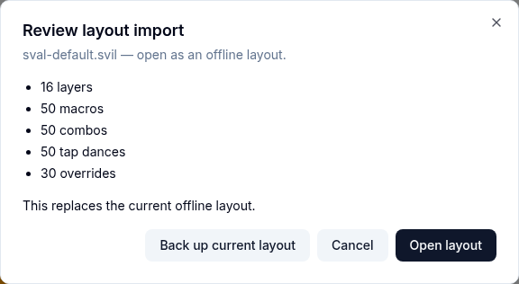
Import is not a complete device-image restore. The current importer keeps the board's alt-repeat entries, leaders, one-shot configuration, layer colors, and fragment state. It reports unsupported fields and settings. Entries beyond the incoming file's layers and tables are kept rather than erased.
A file may be rejected for mismatched matrix dimensions, too many layers or table entries, incompatible keycodes, unsupported macro content, or capacity limits. Read the specific message instead of forcing the file through. Native backups preserve information even when a particular field cannot yet be restored automatically.
Trainer and the desktop overlay
Trainer, directly below Layouts
Trainer previews the appearance and controls the optional desktop overlay. The browser is useful for choosing a style or reviewing an offline layout. Keybard Host supplies the native transparent window above your other applications and reads live board state directly. Its board operations are read-only.
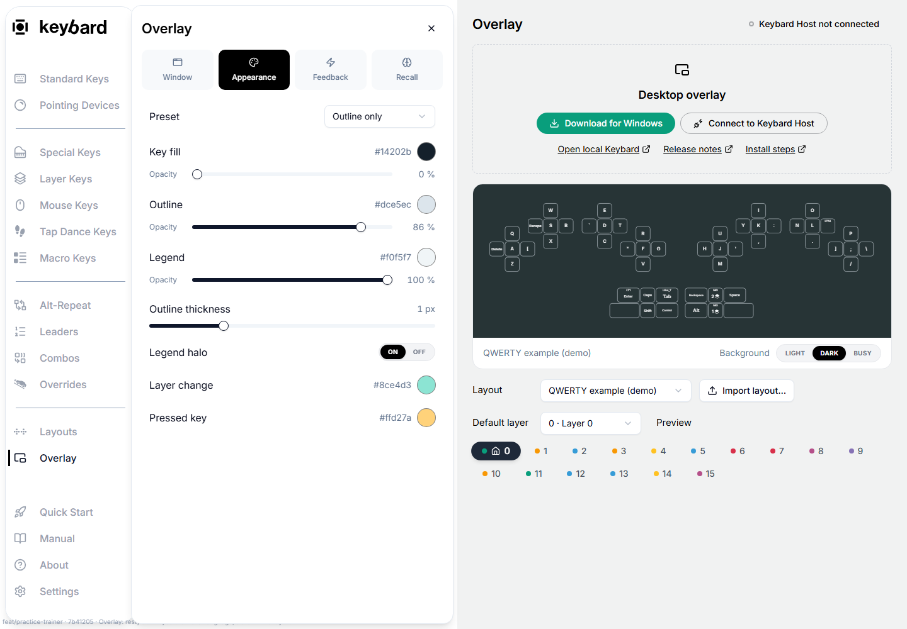
Keep your work in view.
Keep your layout nearby.
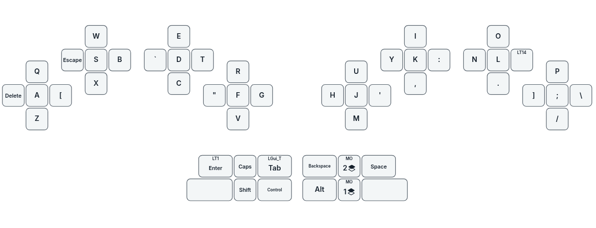
Install and show the Windows overlay
- Select Download for Windows at the top of Trainer. Extract the ZIP and run Start-Windows.cmd.
- Allow the first launch to download its private runtime. It needs internet, but no administrator rights, system Python, or PATH changes.
- The app opens Keybard. Connect your keyboard normally and select Trainer. If needed, use Connect to Keybard Host and allow the browser’s local-device access request. The install panel also links to local Keybard when Host is running.
- Choose the board in the host selector and use Show overlay. Host remembers its selected board for reconnection.
- Drag the overlay into place. In Overlay, optionally enable Click through keyboard; the small handle remains available for moving or hiding it. Place at bottom provides a convenient starting position.
The companion stays in the system tray when you close the browser. Use Hide overlay or the overlay’s handle controls to get it out of the way. After editing the keyboard layout, choose Reload layout so the companion refreshes its cached copy. If reconnection fails, check the host board selection and USB connection rather than importing a different layout to mask the problem.
The Windows download is a portable preview, not a signed installer. Linux source launch is available, with Wayland limitations for placement, stacking, click-through, and modifier reporting. macOS remains unverified; equivalent validated packages for all platforms are not promised.
Choose what you can see
Start with an Appearance preset, then adjust Key fill, Outline, and Legend colors and opacity independently. Try Contrasting legend halo over busy backgrounds. Use Outline thickness for definition without making the fill more opaque. Hands and Overlay size are in Overlay.
In Feedback, choose Layer-change highlight: Off, Quick flash, or Short fade, and its duration. Enable Highlight held keys for a matrix-tester-like indication. Matrix polling can miss very brief taps and does not describe every generated macro or combo output. The preview’s Preview held keys button simulates a chord.
Current firmware reports active and default layers automatically, including changes during use. Older firmware may require Default layer (older firmware). For offline previews, choose Default layer and Preview layer. Layout source distinguishes a loaded snapshot, editor draft, example, imported trainer layout, and a live read-only board. Import for trainer changes the preview source; it does not write that file to the keyboard.
Practice recall without recording your typing
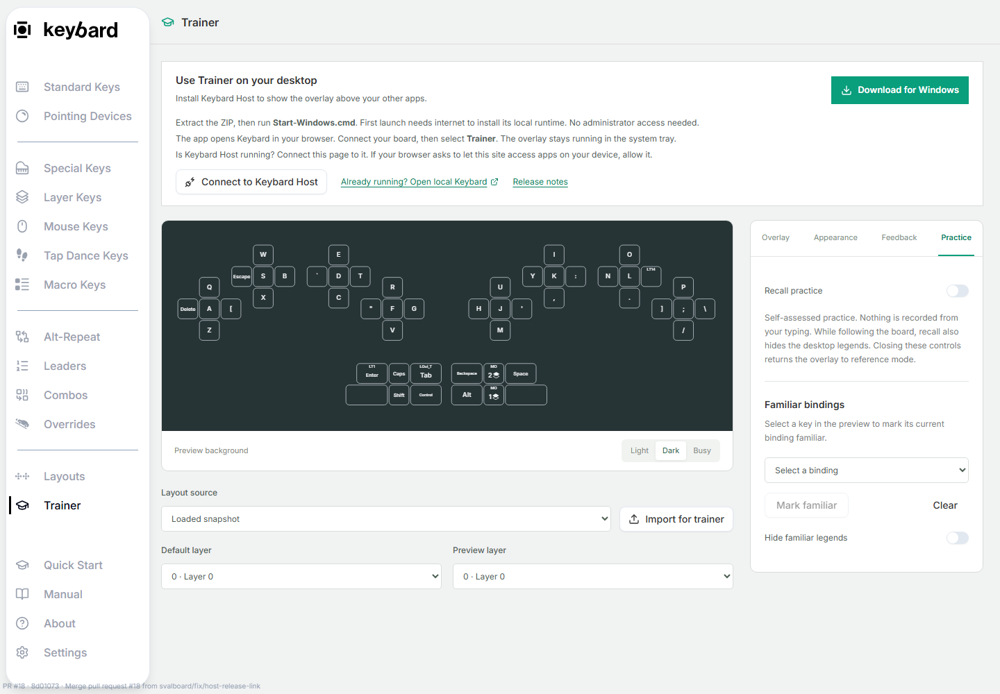
- Open Practice and enable Recall practice. Read the requested binding and hand, and decide where you would press.
- Choose Reveal, then Remembered or Again to advance. This is not an automatic typing test.
- For selective help, choose a key in the preview or the binding selector, click Mark familiar, and enable Hide familiar legends.
- Turn practice off to return to ordinary reference. Closing the temporary controls also returns the desktop overlay to reference mode.
Recall counts and familiar selections are temporary practice state, not a durable learning-history service. Appearance preferences are saved separately. When following the board, recall can also hide desktop legends; otherwise you are practicing against the selected preview layout.
Return to your work
After a refresh, Keybard intentionally returns to the welcome screen. Previously permitted keyboards can appear under or reconnect without the chooser. Select the correct device to read its saved state again.
To continue offline work, choose Load File and reopen your exported draft. Browser preferences and the local Layouts library can persist, but they are not an automatic recovery copy of the current editor session.
Before each editing session, check the target, update mode, selected layer, and whether a key is selected. Use a small naming convention for backups: one before a major change, one after verification. Keep both until the new layout is comfortable.
Recover from common problems
I cannot connect
Check WebHID browser support, the USB data connection, the chosen device, and compatible firmware. Close other configuration applications if they are holding the device, then reconnect. A previously granted browser permission is not proof that the cable, firmware, or current device connection is working.
The layout changed, but typing did not
Check whether you are editing an offline draft or have pending Manual changes. Confirm the physical keyboard is on the layer you edited. Transparent keys may inherit a different binding, and a layer-tap key waits to distinguish a tap from a hold.
Typing unexpectedly changed a binding
Deselect the target and check Typing Binds a Key. In Manual mode, inspect and discard unwanted pending edits. If a change was already applied, explicitly restore the previous binding; discarding does not undo saved writes.
A save failed
Read the Not saved message. Pending edits remain, and some earlier writes may already have succeeded. If still connected, use Retry. If the device disconnected, export the retained draft before reconnecting. Reconnection reads the board again and may discard pending edits. Compare that state with your saved draft, then review an import if appropriate, observing the restore limitations above.
A name will not save
Layer, macro and tap-dance names have a 16-byte UTF-8 limit on supported firmware. Accented characters and emoji can use several bytes each. Shorten the name and read the error. A board’s USB name is a separate setting with its own limits.
Controls or layers seem missing
Expand the navigation rail, reveal Show editor controls if the toolbar is collapsed, or use Show All Layers. Some settings depend on firmware capabilities and attached hardware; an offline example cannot demonstrate every connected-device function.